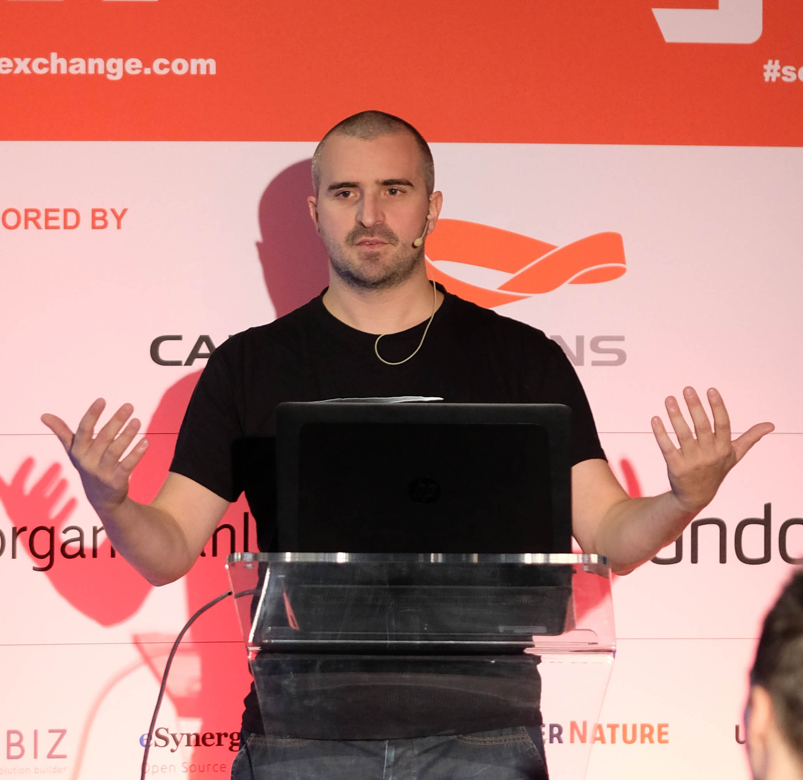
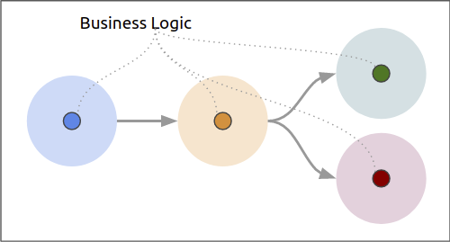
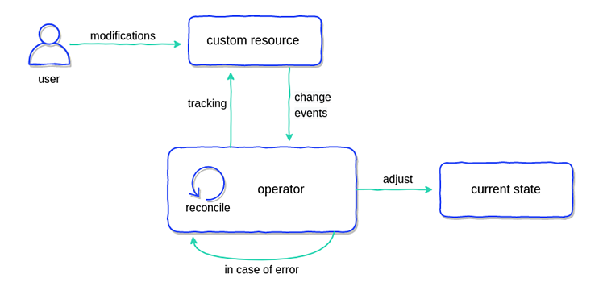
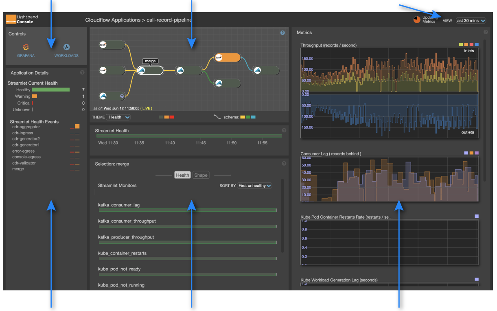
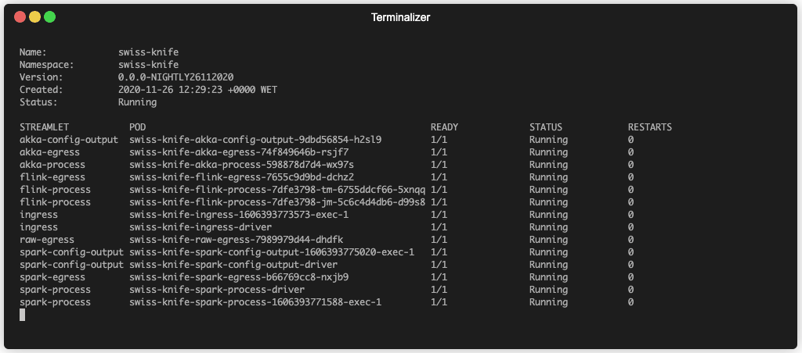
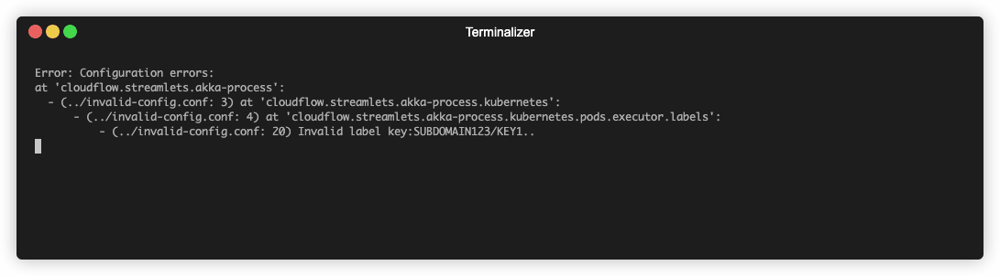
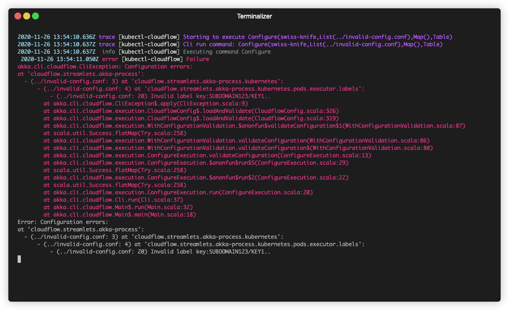
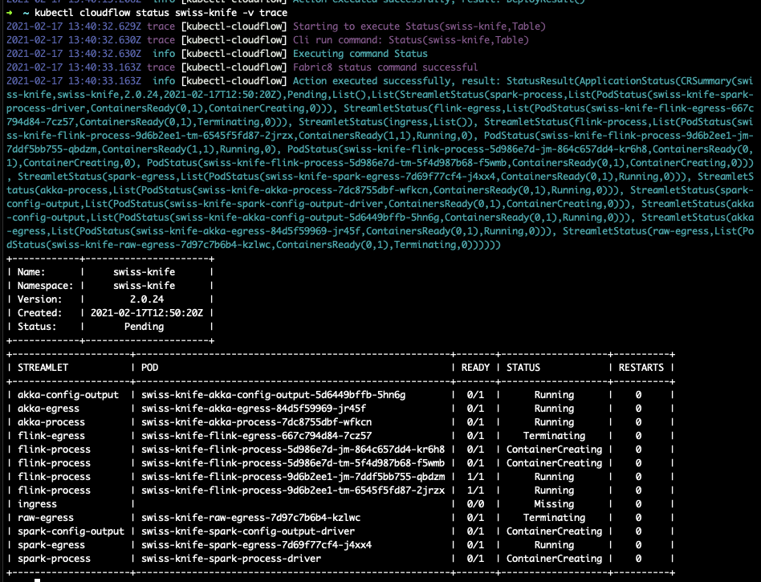

## Scala per applicazioni da riga di comando? Sí grazie! <!-- ## Programmi da riga di comando in Scala? Perche' no! -->
## Chi sono  <br> - [andreaTP]() su GitHub - [@and_prf]() su Twitter
<img style="height: 240px;" src="./imgs/dog.png">
## Ieni-strello
## Programmazione <img style="height: 120px;" src="./imgs/scala-spiral.png"> <img style="height: 120px;" src="./imgs/akka_full_color.svg"> <br> <img style="height: 120px;" src="./imgs/k8s-logo.png">
## Prerequisiti
<br> [Cloudflow.io](http://cloudflow.io/docs/current/index.html)
### microservizi 
### streaming frameworks <img style="height: 120px; background: white" class="fragment" data-fragment-index="1" src="./imgs/akka_full_color.svg"> <img style="height: 120px;; background: white" class="fragment" data-fragment-index="2" src="./imgs/flink.png"> <img style="height: 120px;; background: white" class="fragment" data-fragment-index="3" src="./imgs/spark.png"> ### connessi con<!-- .element: class="fragment" data-fragment-index="4" -->
### integrazione con build tools <br> <img style="height: 120px; background: white" class="fragment" data-fragment-index="2" src="./imgs/maven.png">
### Estensioni a <img style="height: 240px;" src="./imgs/k8s-logo.png">
### operatore 
### monitoring 
### kubectl-plugin: ```bash kubectl cloudflow deploy hello-world.json --conf prod.conf ``` [Writing-kubectl-plugins](https://kubernetes.io/docs/tasks/extend-kubectl/kubectl-plugins/#writing-kubectl-plugins)
## Kubectl cloudflow
## Prima

## Perche' riscrivere? - pagare debito tecnico <!-- .element: class="fragment" data-fragment-index="1" --> - eliminare bachi (e.g. HOCON parsing) <!-- .element: class="fragment" data-fragment-index="2" --> - migliorare l'ergonomia <!-- .element: class="fragment" data-fragment-index="3" --> - ri-usare codice al massimo <!-- .element: class="fragment" data-fragment-index="4" --> - ridurre la manutenzione (librerie ad alto livello) <!-- .element: class="fragment" data-fragment-index="5" --> - abbassare la barriera di ingresso <!-- .element: class="fragment" data-fragment-index="6" -->
## Dopo <img style="height: 400px;" class="fragment" data-fragment-index="1" src="./imgs/scala-spiral.png">
## 1- Binari nativi - GraalVM - Compilatore JIT<!-- .element: class="fragment" data-fragment-index="1" --> - Truffle per implementare linguaggi dinamici<!-- .element: class="fragment" data-fragment-index="2" --> -<!-- .element: class="fragment" data-fragment-index="3" style="color: white;" --> SubstrateVM con AOT<!-- .element: class="fragment" data-fragment-index="3" style="color: white;font-weight: bold; font-style: italic;" -->
## 2- Fabric8 kubernetes-client - usato in produzione (Red Hat)<!-- .element: class="fragment" data-fragment-index="1" --> - API con tipi per CR<!-- .element: class="fragment" data-fragment-index="2" --> - Jackson :-(<!-- .element: class="fragment" data-fragment-index="3" -->
## 3- Riga di comando - Scopt ```scala cmd("deploy") .action((_, o) => o.copy(command = Some(commands.Deploy()))) .text("deploy a cloudflow applications from a cr file") .children( commandParse[commands.Deploy, File](arg("<crFile>"))((c, v) => c.copy(crFile = v)) .required() .text("the CR file of the cloudflow application"), commandParse[commands.Deploy, String](opt('u', "username"))((c, v) => c.copy(dockerUsername = v)) .optional() .text("the docker registry username"), ... ```
## 4- Typesafe Config ```json cloudflow.streamlets.my-streamlet { config-parameters { // config parameter values go here } config { // runtime settings go here } kubernetes.pods.pod.containers.container { // kubernetes container settings go here } } ```
## 5- Pureconfig - case classes<!-- .element: class="fragment" data-fragment-index="1" --> - validation<!-- .element: class="fragment" data-fragment-index="2" --> - error messages<!-- .element: class="fragment" data-fragment-index="3" --> 
## 6- Airframe Log 
## 6- Airframe Log 
## Problemi
### 1- cross compilazione - GH Actions (Linux, Darwin, Win)<!-- .element: class="fragment" data-fragment-index="1" -->
### 2- binari veramente statici - musl <!-- .element: class="fragment" data-fragment-index="1" -->
### 3- configurazione - main alternativo con configurazione assistita<!-- .element: class="fragment" data-fragment-index="1" -->